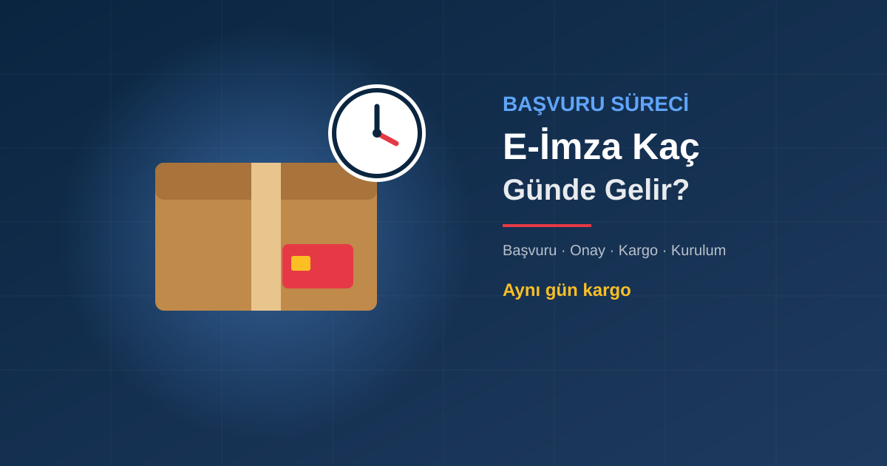

Toplam Süre: Çoğu Müşteri İçin 1-3 İş Günü
E-imza almak, belgeleriniz hazırsa uzun bir süreç değildir. Zamanın büyük kısmını kargo oluşturur:
| Teslim yeri | Onaydan sonra |
|---|---|
| İstanbul, Ankara, İzmir (kurye) | Aynı gün kurye seçeneği |
| Büyükşehirler (kargo) | Ertesi gün |
| Diğer iller (kargo) | 1-2 iş günü |
Adım Adım: Başvurudan Teslime
1. WhatsApp'tan başvuru
Bireysel mi firma adına mı kullanacağınızı ve paket süresini (1, 2 veya 3 yıl) yazın.
2. Belgeler
Bireysel: TC kimlik numarası net görünen kimlik fotoğrafı. Firma: vergi levhası, imza sirküleri ve yetkili kişinin kimliği. Fiziksel evrak göndermezsiniz.
3. Ödeme
Online tahsilat (kredi kartı) veya havale/EFT.
4. Onay ve üretim
Belge onayıyla sertifika üretimi başlar; kart ve okuyucu aynı gün kargoya verilir.
5. Teslim ve kurulum
Kart elinize ulaşınca sürücü ve tarayıcı ayarlarını uzaktan bağlantıyla birlikte kuruyoruz.
Süreyi Uzatan 4 Hata
- Okunaksız kimlik fotoğrafı: TC kimlik numarası veya yüz net değilse belge tekrar istenir. Işıklı bir ortamda, flaşsız ve kenarları görünecek şekilde çekin.
- Firma belgelerinin eksik olması: İmza sirküleri güncel değilse ya da başvuran kişi yetkili değilse süreç durur.
- Hafta sonu ve resmi tatiller: Kargo iş günlerinde çalışır; cuma akşamı yapılan başvuru genellikle pazartesi yola çıkar.
- Teslimat adresinde bulunmamak: Kargo teslim edilemezse bir gün daha kaybedilir; kargo takip numarasını izleyin.
Acil E-İmza Gerekiyorsa
Beyanname, ihale veya dava için son gün yaklaşıyorsa:
- Belgelerinizi sabah erken iletin, onayın aynı gün tamamlanma ihtimali artar.
- İstanbul, Ankara veya İzmir'deyseniz aynı gün kurye seçeneğini sorun.
- Mevcut e-imzanızın süresi dolmak üzereyse yeni kart yerine süre uzatma yapın; yeni sertifika mevcut kartınıza yüklenir, kargo beklemezsiniz.
Geldikten Sonra: Kurulum Ne Kadar Sürer?
Kart ve okuyucu elinize ulaştığında sürücü, gerekirse Java ve tarayıcı eklentisi kurulmalıdır. Kendiniz yapmak isterseniz E-İmza Kurulumu rehberimizi izleyebilirsiniz; isterseniz uzaktan bağlanıp birlikte kuruyoruz. Bir sorunla karşılaşırsanız E-İmza Hataları ve Çözümleri yazımıza bakın.